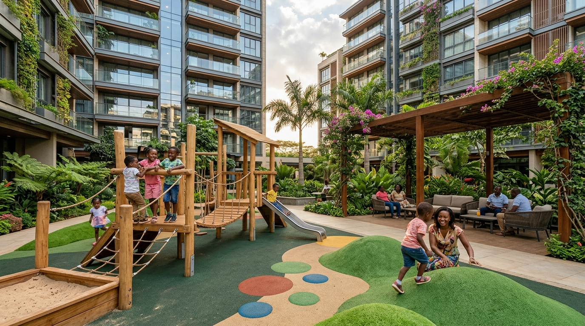
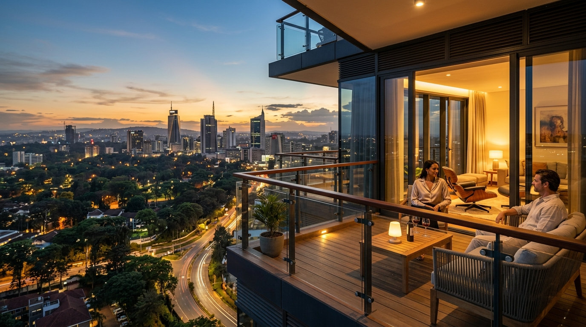
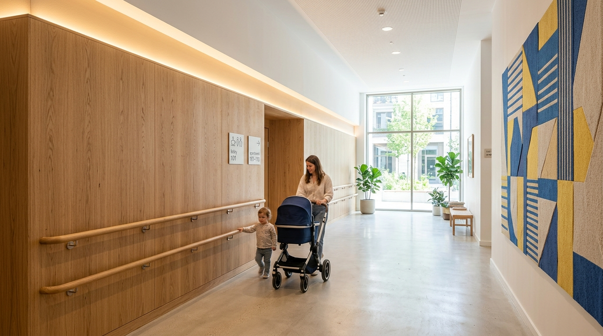
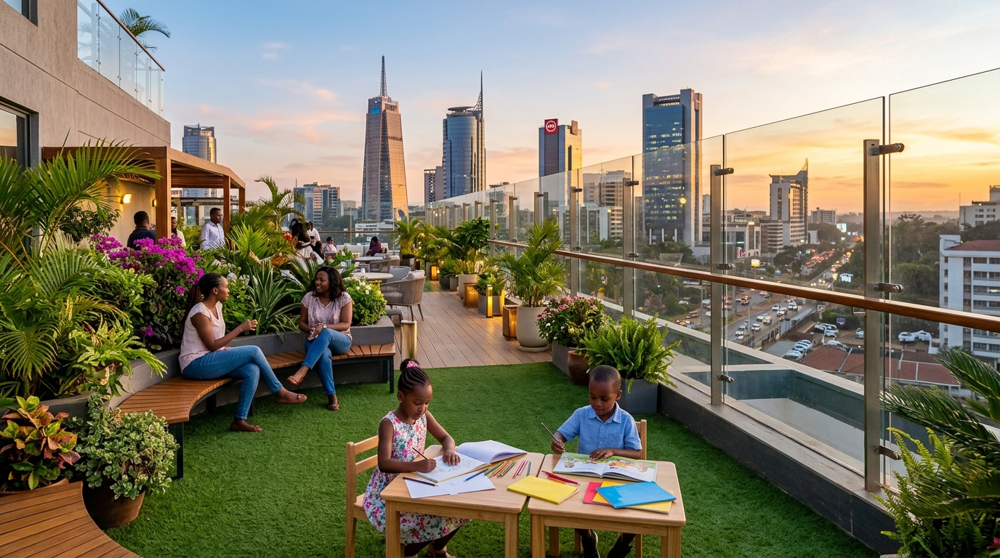

The Child-Friendliness Index (CFI) is an architectural framework that helps developers and property managers benchmark safety, play spaces, and comfort in high-rise residences across East Africa.

What looks harmless to an adult can be an immediate hazard to a toddler. Toggle below to compare the adult view with the child's perspective.

Tip: Switch to Child View and click the red alert markers to apply safety retrofits in real time.
Practical lessons from over 40 audits in Kilimani, Westlands, and Kileleshwa. Real spaces, real solutions.
Over 70% of audited balconies have horizontal railings that double as toddler climbing ladders. Here is how modern vertical glass upgrades solve this safely without blocking views.
Properties with dedicated, car-free courtyards retain tenant families twice as long as adult-only designs, delivering proven long-term yields for property owners.

Harsh, reverberating corridors cause sensory distress for young children. Dual 60cm handrails and acoustic dampening create welcoming, dignified arrival spaces.

With ground lots dedicated to parking bays, high-altitude rooftop gardens with 1800mm glass wind buffers bring back communal play in dense urban centers.
We replace guesswork with exact, evidence-based architectural benchmarks.
Non-climbable vertical perimeter guarding against accidental falls at height.
Rigid spacing limit preventing pediatric head entrapment between vertical rails.
Secondary ergonomic rail along stairs and corridors allowing toddler independence.
Physical bollards and chicanes ensuring safe separation from moving vehicles.
Select your current building features to estimate your Child-Friendliness Index score.